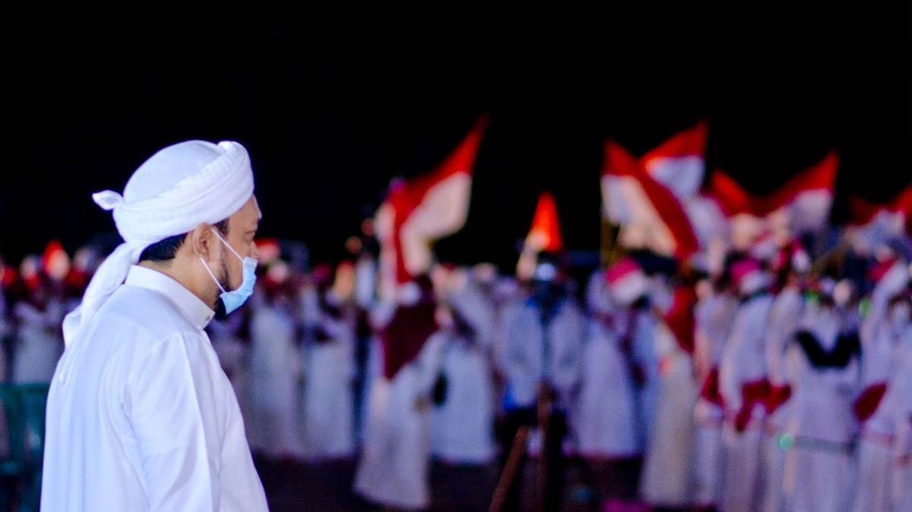

Tasyakkuran Malam Puncak Kemerdekaan RI

Masyarakat bersama jajaran pengurus dan tokoh setempat menggelar tasyakkuran menjelang 17 Agustus sebagai wujud syukur atas kemerdekaan.
Kegiatan diisi dengan pembacaan tahlil, doa untuk para pahlawan, serta harapan agar bangsa Indonesia senantiasa diberi keselamatan dan persatuan.
Momentum ini juga menguatkan semangat gotong royong di lingkungan pesantren dan masyarakat, sekaligus meneguhkan nilai cinta tanah air.
IKSASS mengajak seluruh elemen untuk mengisi kemerdekaan dengan karya nyata, menjaga akhlak, serta memperkuat persaudaraan.
Gabung Channel IKSASS
Dapatkan update kegiatan, agenda, dan berita terbaru langsung dari IKSASS.